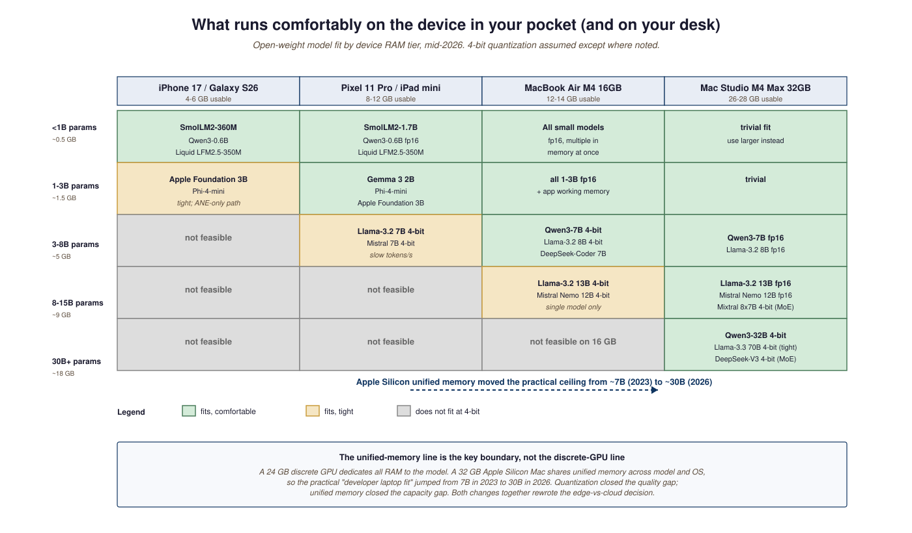

- Compare the three edge-runtime stacks (MLX, llama.cpp, vendor NPU SDKs) by target hardware and quantization support.
- Explain why unified memory expanded the "fits on a laptop" model size from 7B to ~30B between 2023 and 2026.
- Pick the right edge model for a given task by capability tier (chat, structured extraction, simple coding).
- Identify the practical boundary where edge inference loses to a cloud API call.
Three independent forces aligned in 2025 to make on-device LLMs genuinely useful: Apple Silicon's unified memory normalized 32+ GB of fast shared RAM, quantization closed the 4-bit-to-fp16 quality gap to two perplexity points, and small models (Qwen3-0.6B, SmolLM2-360M, Liquid LFM2.5-350M) reached "useful at chat" sub-billion. The combined effect is that pocket-device LLMs in 2026 are roughly as capable as cloud LLMs were in mid-2023, with zero network latency and zero per-token cost.
The edge-LLM story changed in 2025 because three things lined up: Apple Silicon's unified-memory architecture made 32 GB of fast memory ubiquitous on laptops and increasingly on phones; quantization research closed the gap between 4-bit and fp16 quality to roughly two perplexity points on most benchmarks; and small models (Qwen3-0.6B, SmolLM2-360M, Liquid LFM2.5-350M) reached "useful at chat" capability under one billion parameters. The result is that 2026's pocket-device LLMs are roughly as capable as the cloud LLMs of mid-2023, with zero network latency and zero per-token cost.
The runtime story has consolidated around three engines: MLX on Apple Silicon, llama.cpp everywhere else, and vendor-specific stacks like Qualcomm's AI Engine on Android. The most important 2026 development was Apple's WWDC 2025 disclosure that iOS Foundation Models ship on MLX and Ollama's migration to MLX as its Apple Silicon backend.

63.3.1 MLX: Apple's tensor framework
MLX is Apple's PyTorch-shaped tensor library, designed specifically for the unified-memory architecture of Apple Silicon (M1 through M4). On unified memory, CPU and GPU share the same physical RAM, eliminating the GPU-VRAM copy that dominates inference latency on discrete-GPU systems. MLX exposes lazy evaluation, function transforms (grad, vmap, jit), and a Python API that translates from PyTorch almost mechanically. The mlx-lm companion package implements the LLM-specific loading and generation paths.
63.3.2 Apple Intelligence Foundation Models
Apple shipped its Apple Intelligence Foundation Models in iOS 18 (late 2024) and expanded the family in iOS 19 (late 2025). The on-device model is ~3B parameters, runs entirely on the Neural Engine + GPU, and is exposed through a structured-generation API rather than chat. Apple's January 2026 ICLR paper details native LLM and MLLM inference at scale on Apple Silicon.
63.3.3 Llama-Mobile and the small-open frontier
The "small open-weight model that runs on a phone" tier exploded in 2025. The strongest entries are:
- SmolLM2 (135M / 360M / 1.7B): trained on FineWeb-Edu; the best small open model for English chat.
- Qwen3-0.6B: 60,000:1 tokens-to-parameters ratio, the densest small-text model published.
- Liquid LFM2.5-350M (April 2026): set a new data-to-parameter ratio record of 80,000:1 on 28T training tokens; non-transformer architecture.
- Phi-4-mini: Microsoft's small-model line; synthetic-curriculum training.
- Gemma 3 2B: Google's smallest open release, multimodal vision in the 2B size.
63.3.4 Comparing the edge runtimes
| Runtime | Target hardware | Format | Best for |
|---|---|---|---|
| MLX | Apple Silicon (M1-M4) | safetensors + custom | Mac / iPad / iPhone inference |
| llama.cpp | Any CPU, NVIDIA, AMD, Vulkan | GGUF | Lowest-common-denominator everywhere |
| Ollama | Wraps llama.cpp + MLX | GGUF + Apple Silicon | Easiest developer experience |
| Qualcomm AI Engine | Snapdragon NPU | Vendor format | Android phones with NPU |
| ONNX Runtime GenAI | Cross-platform | ONNX | Windows on Snapdragon, embedded |
On a 24 GB consumer GPU you can load a 70B 4-bit model but you cannot do anything else with that GPU at the same time. On a 32 GB Apple Silicon laptop with unified memory, a 4-bit 30B model shares the same memory pool with the rest of your applications and the GPU side never has to copy in from a separate pool. The practical consequence is that "what model fits comfortably on a developer laptop" jumped from ~7B to ~30B between 2023 and 2026, mostly because Apple Silicon's unified memory became normal. The ACM Computing Surveys edge-LLM review documents this shift across architectures.
Apple's iOS 19 ships a routing layer that classifies user requests in three tiers: on-device (the ~3B Apple Foundation Model handles it locally on the Neural Engine), Private Cloud Compute (a hardened Apple-operated MLX inference fabric), or Apple-Anthropic / Apple-OpenAI partner cloud (with explicit user consent). The routing happens client-side based on prompt complexity, privacy classification, and current battery level. The headline behavior: roughly 70-85% of routine queries (summarize this notification, rewrite this email, transcribe this voice memo) never leave the device, which means zero network latency and zero per-query cost to Apple. Apple's ICLR 2026 paper describes the routing classifier; the Foundation Models 2025 update covers the on-device model's training and distillation pipeline. This is the largest-scale deployment of edge LLMs in 2026 and a template for every consumer-device vendor that follows.
from mlx_lm import load, generate
model, tokenizer = load("mlx-community/Qwen3-7B-Instruct-4bit")
print(generate(model, tokenizer, "Explain MLX in one sentence.", max_tokens=128))First-token latency on an M4 is roughly 200 ms; sustained tokens-per-second is 30 to 60 depending on the model. Compared to a cloud API call (typically 300-1500 ms first-token over the public internet), the local round trip wins almost every time for short interactions.
The 2026 line for "is this edge-suitable" is roughly: chat that fits in one screen of text, structured extraction up to ~50 fields, simple coding completions, on-device summarization, dictation grammar. Anything that benefits from frontier reasoning (math proofs, multi-hop research, complex code synthesis) still wants the cloud. Treat edge models as the cheap, instant tier of the same hierarchy that puts Gemini Flash and Claude Haiku above the flagships.
Post-training quantization (PTQ) is fine at 8-bit; at 4-bit it loses 1-3 perplexity points on serious tasks and at 2-bit or 1.58-bit it loses meaningfully more. Quantization-aware training (QAT), where the model trains with simulated quantization noise, recovers most of that gap. SmolLM2 and Phi-4-mini are QAT-trained from the start; BitNet b1.58 2B4T extends this all the way to 1.58-bit ternary weights. If you are deploying to an edge device with tight memory, prefer a model that was QAT-trained over one that was post-quantized after a fp16 pretrain. The BitNet inference framework is the production-grade reference for 1.58-bit serving.
63.3.5 Looking ahead
The unresolved edge-LLM question is whether MoE routing can be made energy-efficient on heterogeneous edge hardware. Pure-dense small models (SmolLM2, Qwen3-0.6B) work well today; sparse-MoE small models would in principle deliver more capability per active parameter but the routing overhead on NPUs is currently prohibitive. Section 63.4 turns to the kernels that drive inference latency on the cloud side, especially FlashAttention-4's adaptation to Blackwell's asymmetric SMs.
- Edge LLMs became practical in 2025 because unified memory, quantization, and small-but-strong open models converged.
- MLX (Apple), llama.cpp (everywhere), and vendor NPU SDKs (Qualcomm, Apple ANE) are the three runtime families.
- Apple Intelligence is the largest-scale 2026 deployment, with on-device, Private Cloud Compute, and partner cloud all addressable via the same client API.
- QAT-trained small models (SmolLM2, Phi-4-mini, BitNet b1.58) outperform post-quantized larger models on memory-constrained devices.
Q1. A 7B model in fp16 is 14 GB. Why can a 32 GB MacBook Air run a 4-bit 30B model when a 24 GB discrete GPU sometimes cannot?
A: Unified memory: the same 32 GB pool serves the OS, applications, and the model. A discrete GPU's VRAM is dedicated; once the model + KV cache exceed it, you must offload to system RAM via a slow PCIe path.
Q2. When should you push a query from on-device to a cloud API?
A: When the task requires frontier reasoning (multi-step math, long-horizon planning, novel-domain synthesis), or when the local model's calibration confidence falls below threshold. Apple's iOS 19 routing is the production reference.